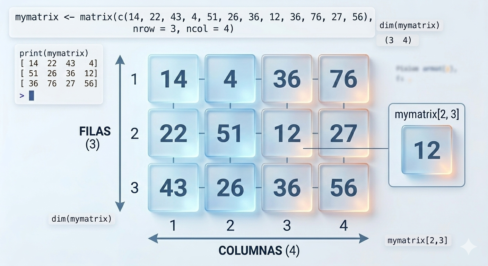
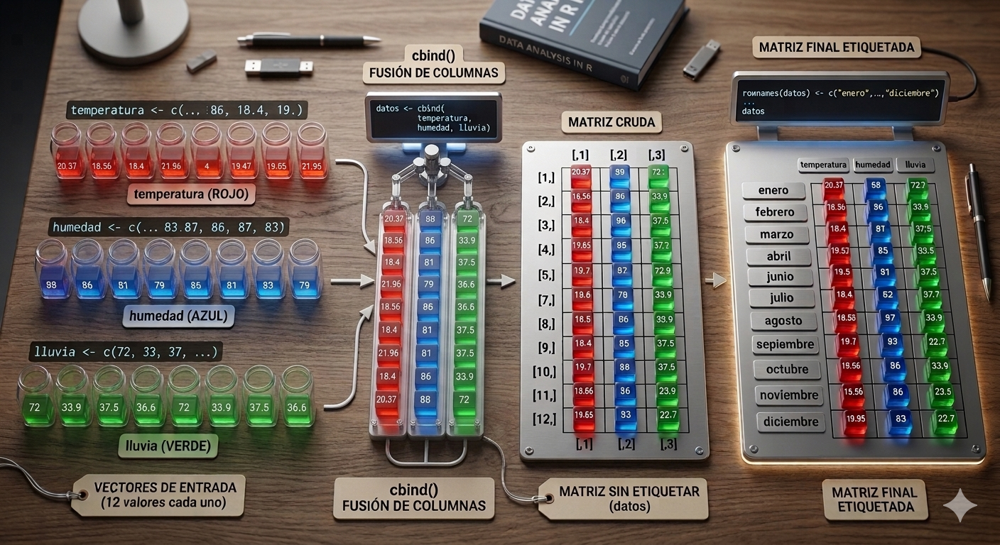

Una matriz es una estructura de datos bidimensional que organiza elementos del mismo tipo (como números, caracteres o valores lógicos) en una cuadrícula de filas (nrows) y columnas (ncol).
Puedes visualizarla como una tabla matemática donde cada elemento es identificado por dos coordenadas o índices: la posición de su fila y la posición de su columna.
Puntos clave:
Homogeneidad: Todos los datos dentro de la matriz deben ser del mismo tipo (por ejemplo, no puedes mezclar texto y números en una misma matriz).
Bidimensionalidad: A diferencia de un vector (que solo tiene una dimensión), la matriz requiere dos índices para acceder a un valor: [i, j], donde i es la fila y j es la columna.

La función principal es matrix(). Debes especificar los
datos, el número de filas (nrow) o columnas (ncol).
Por defecto, las matrices se completan primero la columna 1, después la columna 2, columna 3, ….
## [,1] [,2] [,3]
## [1,] 1 4 7
## [2,] 2 5 8
## [3,] 3 6 9# Creamos una matriz de 4 filas y 34 columnas con datos selccionados por nosootros (van dentro de un vector)
matrix(c(14, 22, 43, 4, 51, 26, 36, 12, 36, 76, 27, 56), nrow = 3, ncol = 4)## [,1] [,2] [,3] [,4]
## [1,] 14 4 36 76
## [2,] 22 51 12 27
## [3,] 43 26 36 56Las matrices creadas suelen guardarse en una variable es fundamental porque sino se hace la matriz se mostrará en la consola y, a continuación, desaparecerá; no podrás volver a usarla.
# Guardamos la matriz en la variable mimatriz
mimatriz <-matrix(20:25, nrow= 2, ncol=3)
print(mimatriz)## [,1] [,2] [,3]
## [1,] 20 22 24
## [2,] 21 23 25## [,1] [,2] [,3]
## [1,] 40 44 48
## [2,] 42 46 50Para acceder a un elemento específico dentro de una matriz en R,
utilizamos el operador de corchetes [ ],
indicando las coordenadas mediante la notación
[fila, columna].
Aquí tienes cómo funciona:
nombre_de_la_matriz[fila, columna]
# Acceder al elemento en la segunda fila y tercera columna
mi_matriz = matrix(1:9, nrow = 3, ncol = 3)
print(mi_matriz)## [,1] [,2] [,3]
## [1,] 1 4 7
## [2,] 2 5 8
## [3,] 3 6 9## [1] "**---------------------**"## [1] 8Para accder a los datos de una fila completa:
## [,1] [,2] [,3]
## [1,] 1 3 5
## [2,] 2 4 6## [1] 2 4 6## [1] 3 4## [1] 1 3Ejemplo: Crear una matriz 2x4
## [,1] [,2] [,3] [,4]
## [1,] 1 3 5 7
## [2,] 2 4 6 8## [,1] [,2] [,3] [,4]
## [1,] 1 3 5 7
## [2,] 2 4 6 8En el siguiente caso la matriz rellena primero la fila 1, después la fila 2 …
## [,1] [,2] [,3] [,4]
## [1,] 1 2 3 4
## [2,] 5 6 7 8## [,1] [,2]
## [1,] 1 3
## [2,] 2 4## [,1] [,2]
## [1,] 5 7
## [2,] 6 8Suma de matrices: +
## [,1] [,2]
## [1,] 6 10
## [2,] 8 12Producto matricial: %*%
# Multiplicar las matrices (producto matricial)
resultado_multiplicacion <- matriz_a %*% matriz_b
print(resultado_multiplicacion)## [,1] [,2]
## [1,] 23 31
## [2,] 34 46Transpuesta: t
## [,1] [,2] [,3]
## [1,] 1 3 5
## [2,] 2 4 6## [,1] [,2]
## [1,] 1 2
## [2,] 3 4
## [3,] 5 6| Función | Descripción |
|---|---|
dim(), nrow(), ncol() |
Número de filas y/o columnas |
diag() |
Diagonal de una matriz |
* |
Multiplicación elemento a elemento |
%*% |
Multiplicación matricial |
cbind(), rbind() |
Encadenamiento de columnas o filas |
t() |
Transpuesta de una matriz |
solve(A) |
Inversa de la matriz A |
solve(A, b) |
Solución del sistema de ecuaciones |
qr() |
Descomposición QR |
eigen() |
Autovalores y autovectores |
svd() |
Descomposición en valores singulares (SVD) |
Este código es un ejemplo excelente de cómo pasar de datos “sueltos” (vectores) a una estructura de datos organizada (una matriz) y, lo más importante, cómo añadirle etiquetas (nombres) para que sea mucho más fácil de leer y entender.
En resumen:
Preparación de datos: Se crean tres vectores
(temperatura, humedad, lluvia)
con 12 valores cada uno. Es crucial que tengan la misma
longitud.
Unión por columnas (cbind()): Se
usa la función cbind() para pegar los vectores uno al lado
del otro horizontalmente, creando una matriz de 12 filas y 3 columnas.
Las columnas reciben automáticamente los nombres de los vectores
originales.
Etiquetado de filas (rownames()):
Se asigna un vector con los nombres de los 12 meses a las filas de la
matriz usando rownames(). Esto transforma los índices
numéricos en etiquetas legibles, facilitando la comprensión y el acceso
a los datos.
Verificación de dimensiones: Se usan funciones
como dim(), nrow() o ncol() para
confirmar que la estructura final es la esperada (12x3).

temperatura <- c(20.37, 18.56, 18.4, 21.96, 29.53, 28.16, 36.38, 36.62, 40.03, 27.59, 22.15, 19.85)
humedad <- c(88, 86, 81, 79, 80, 78, 71, 69, 78, 82, 85, 83)
lluvia <- c(72, 33.9, 37.5, 36.6, 31, 16.6, 1.2, 6.8,36.8, 30.8, 38.5, 22.7)
datos <- cbind(temperatura, humedad, lluvia)
rownames(datos) <- c("enero", "febrero", "marzo", "abril", "mayo",
"junio", "julio", "agosto", "septiembre",
"octubre", "noviembre", "diciembre")
colnames(datos)## [1] "temperatura" "humedad" "lluvia"## temperatura humedad lluvia
## enero 20.37 88 72.0
## febrero 18.56 86 33.9
## marzo 18.40 81 37.5
## abril 21.96 79 36.6
## mayo 29.53 80 31.0
## junio 28.16 78 16.6
## julio 36.38 71 1.2
## agosto 36.62 69 6.8
## septiembre 40.03 78 36.8
## octubre 27.59 82 30.8
## noviembre 22.15 85 38.5
## diciembre 19.85 83 22.7## [1] 12 3## [1] 12## [1] 3